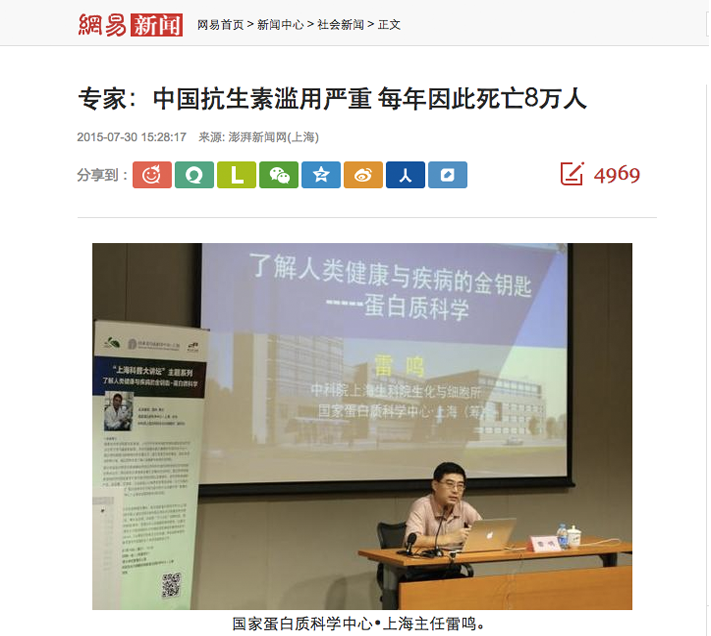
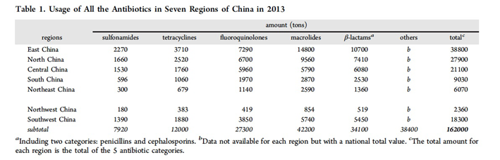
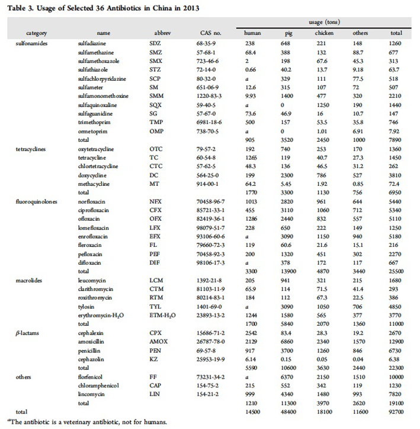
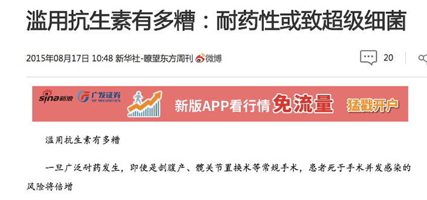
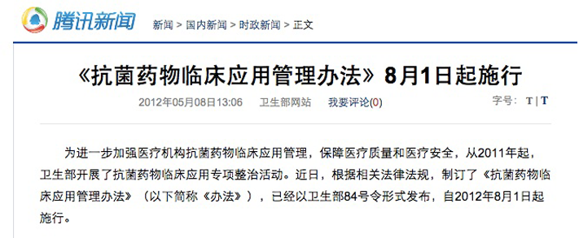

Research on the present situation of antibiotic residues and its solutions
At present, the use of antibiotics is common. The reason is usually that doctors let the patients take injections in order to increase the income of the hospital, In addition, the abuse of antibiotics in the food industry is also very serious. In different sectors of the food industry, such as fish and honey, there are cases of abuse of antibiotics. Evidence shows that the more antibiotics used, the more resistance human will have. This has affected the human health for a long time. In recent years, the discovery of the "super bacteria" in many countries has struck the alarm, and the problem has become increasingly serious[1].
1. Current situation of antibiotics abuse
"China has a big scale in the use of antibiotics. For example, the annual production is 0.21 million tons, while export is 0.03 million tons, the rest are used. So the per capita consumption is 138g, which is10 times that of the USA." said by Ming Lei, the Deputy Head of institute of biochemistry and cell, Shanghai institute for biological sciences. He also said "The use of antibiotics in our country is worrying, because 80,000 people die every year from antibiotic abuse." [2]The National Health Department of the national bacterial drug resistance monitoring results show that the use rate of antimicrobial drug in hospital is up to 74% from 2006 to 2007. In the United States, Britain and other developed countries, the use rate of antibiotics in hospital is only 22% to 25%. Chinese obstetrics have overused antibiotics for a long time, and penicillin resistance has reached almost 100%. In our country, the use rate of antibiotics in inpatient was as high as 70%, and it was almost 97% in the surgical patients. According to the disease classification survey from 1995 to 2007, in China, the number of infectious diseases accounted for 49% of the total number of diseases, including bacterial infections accounted for 18% to 21% of all diseases. In other words, more than 80% is the abuse of antibiotics and 80,000 people die from it every year. These numbers tell us the fact, China is one of the most serious abuse of antibiotics in the world. ish the project and get the prize, I think we would be moved by ourselves.
Guangguo Ying's team, belonging to Guangzhou Institute of Geochemistry, Chinese Academy of Sciences, studied national consumption, emission, and multimedia fate of 36 frequently detected antibiotics in China by market survey. Bases on this survey in Table 1,sulfonamides, tetracyclines, fluoroquinolones, macrolides, β-lactams, and other antibiotics shared 5%,7%, 17%,26%,21%, and 24% of the total usage, respectively. The survey in the seven regions of China for five main categories of antibiotics (except the category of other antibiotics ) showed that east China consumed the largest amount of antibiotics and northwest China consumed the smallest.
Based on the date in Table 3, for the selected 36 target antibiotics, their total usage was 92700 tons. Veterinary antibiotics accounted for 84.3%(pig:52.2%,chicken:19.6%, and other animals:12.5%), whereas human antibiotics only shared 15.6%[3].
In comparison with the main chemical groups of veterinary antibiotic in the USA and UK, where tetracyclines, β-lactams(including penicillin), and macrolides are the majority antibiotic active ingredients sold in veterinary medicinal products [4] [5], these three groups plus fluoroquinolones are consumed more in China. In addition, ofloxacin, tetracycline, and norfloxacin were consumed more than 1000 tons by humans in China. It is observed that the main groups of antibiotics for human use in China are similar to other countries such as the UK [6], USA [7],and Canada [8].
2. Consequences of the abuse of antibiotics
Early in 2015, the British economist Jim Onel pointed out that China should add the inclusion of antibiotic resistance into the G20 summit which will be held in Beijing in 2016. "If we don't take the appropriate measures, all the people will be subject to the threat of death because of antibiotic resistance." Drug resistance and the "super bacteria", are the greatest harm caused by the abuse of antibiotics. "From a clinical point of view, the current frequency of super bacteria is indeed higher than that in the past." Erzhen Chen, deputy director of the Ruijin Hospital Affiliated to Shanghai Jiao tong University School of Medicine, director of the emergency department, said on the Oriental Outlook weekly. Now the research and development of antibiotics is becoming more and more difficult. In the last 80 years, scientists have found many kinds of antibiotics, almost all the microorganisms were found for new antibiotics. In addition, " the development speed of new antibiotics is slower than the speed of bacterial resistance." Chen Erzhen said. When we develop a new type of antibiotics, even after less than a few months, there will be drug resistant bacteria. The abuse of antibiotics leads to serious adverse reactions: when antibiotics enter the human body, it not only play a role in the treatment, but also cause a lot of adverse reactions. Detection case report of the national drug adverse reaction monitoring center showed that the adverse reactions of antibiotics accounted for nearly half of the total number of adverse reactions in medicine. Medical experts investigate the 0.2 million death caused by drug adverse reactions in 2005 and draw a conclusion: 40% of patients die from the abuse of antibiotics; 75% of hospitalized patients use antibiotics, 20% of outpatient patients use antibiotics; Chinese children under 7 years older, the number of diseases caused by irrational use of antibiotics reaches 0.3 million, accounting for 35% of the overall prevalence of children.

As a professional workers of drug adverse reaction monitoring, Dr. Wenmin Du think that the drug is a double-edged sword, medication using needs to be cautious. Drugs not only play a role in the treatment, but also cause a lot of adverse reactions, and some adverse drug reactions are even quite serious! A newly born baby, his trunk and body are normal, but not all of the limbs...... Dr. Du showed an amazing picture to the audience, but every audience sighed. Dr. Du explained that in medicine, the deformity is called "phocomelia". Adverse drug reaction monitoring in the world also began from the disaster caused by thalidomide. In fact, adverse drug reactions are very common phenomenon. In the history of China, the most serious adverse drug reaction is streptomycin and gentamicin, and nearly two thirds of deaf are caused by them. The disability rate is very high. Another is tetracycline, in the 70's of last century, tetracycline is the best antibacterial drugs. But many people at that time have "the tetracycline teeth" because of the use of this drug.
Abuse of antibiotic damages the ecological balance: the potential threat of abuse of antibiotics is antibiotics in sewage as the active form. More than 90% of antibiotics used by human are excreted in the activity form. When these antibiotics appear in our drinking water, not only will enter the body to interference the balance of normal bacterium group, but also to destroy the ecological balance by killing the beneficial bacterium. [9]
Some studies have shown that the use of antibiotics is associated with an increased risk of cancer. A meta-analysis including four case-control studies and one cohort study showed that antibiotic use was associated with an increased risk of breast cancer, and there were also studies suggesting that antibiotics were associated with increased risk of other cancers, such as prostate cancers and lung cancers. However, we cannot conclude that the use of antibiotics will cause cancer.[10]
3. Strategy to solve the problem of the abuse of antibiotic
1). Regulate business behavior. Government should strengthen the supervision of the commercial behavior of antibiotics, regulate the sales channels of antibiotics, regulate the pricing standards, prevent and cure the phenomenon of false propaganda of antibiotics. Increase the intensity of punishment for the violation of the relevant provisions.
In fact, the national health and family planning commission of the People's Republic of China has issued a plan for the management of antibiotics. The implementation of the "clinical application of antimicrobial drugs management approach" (hereinafter "approach") since August 1, 2012 is called the most stringent restrictions of antibiotics". The "approach" divided the antibiotics into three levels: non restricted use, limiting use and special use. It clearly defines the prescribing privileges of different levels of doctors. The doctors who misuse the antibiotics seriously will be revoked the certificate of practice.

2). Standard medication guide. World Health Organization news official Sawyer pointed out that we must have a comprehensive and rational drug use and supervision system, and train and guide medical personnel the rational drug use to achieve the right, rational drug use. In addition, establish the drug information system to help patients to choose the right drugs and treatments.
3). Strengthen medical reeducation. Reeducating the Duty personnel helps improve the level of medical personnel practice, is conducive to the medical staff to correct previous mistake, helps improve the treatment level of medical personnel, helps avoid drug misuse and abuse of drugs.
4). Strengthen the monitoring of clinical application of antibiotics. Relevant institutions should strengthen the monitoring and research of the clinical application of antibiotics, in particular the research and monitoring of those new antibiotics, and timely give feedbacks about the relevant research information to the doctor.
5). Increase the publicity of using antibiotics sciencely. We should increase the publicity of using antibiotics sciencely, especially in rural areas. Propaganda object not only includes patients, but also should include medical workers, especially for those basic level medical workers.
6). Emphasize on communication between doctors and patients. Good communication between doctors and patients can help doctors understand the actual efficacy and side effects of the drug, can improve the therapeutic schedule. At the same time, it can also help patients find the medication errors timely and eliminate some confusion in the process of drug use to prevent patients from misuse of medication.
7). Strengthen the education of medical ethics. Medical institutions should strengthen the education of medical ethics. Establish reasonable medical ethics oversight and reward systems to correct medical personnel's service orientation, resist the financial inducements consciously, selected good and less drug for the patients.[11,12]
In summary, discovery and use of antibiotics is a revolution of human. Since then, people have a weapon to struggle with the death, but in recent years, because of the abuse of antibiotics, much pathogenic bacteria resistance, and new drug development speed can't catch up with the speed of appear of bacteria resistance. If this trend continues, human will face the situation that no antibiotic can be used. Therefore, each of us should understand the dangers of abuse of antibiotics, learn to use antibiotics correctly. Reduce the adverse reactions caused by abuse, make each kind of antibiotics play a better role in medicine, ensure the treatment effect of every patient. In our country, the abuse of antibiotics is very serious, it need efforts from all sectors of society to solve this problem.
4. Reference
[1] JingLi. Analysis and discussion about antibiotics abuse[J]. World Health Digest: 2011,96(33):02-06.
[2] YuanwuYang. Every year 80,000 people died because of the abuse of antibiotics in China [N]. Chongqing Evening News, 2010-10-27(6).
[3] Zhang QQ, Ying GG*,Pan CG,LiuYS, Zhao JL(2015) Comprehensive evaluation of antibiotics emission and fate in the river basins of China: Source analysis,multimedia modelling, and linkage to bacterial resistance. Environmental Science & Technology 49,6772-6782.
[4] Eckford, S.; Grace, K.; Harris, C.; Reeves, H.j; Teale, C.; Tallentire,C.UK Veterinary Antibiotic Resistance and Sales Surveillance 2013; 2013. Available at www.vmd.defra.gov.uk(accessed May 1,2015)
[5] FDA,Summary Report On Antimicrobials Sold of Distributed for Use in Food-Producing Animals. In Food and Drug Administration, Department of Health and Human Services: USA, Ed.2014.Available at http://www.fda.gov/downloads/Drugs/DrugSafety/InformationbyDrugClass/UCM 319435,pdf(accessed May 1,2015).
[6] English surveillance programme for antimicrobial utilisation and resistance (ESPAUR),report 2014. In Public Health England,Department of Health, Ed.London,2014.Available at http://www.gov.uk/government/publications/english-surveillance-programme-antimicrobial-utilisation-and-resistance-espaur-report (accessed May 1,2015)
[7] FDA,Drug Use Review. In Department of Health and Human Services, P.H.S.,Food and Drug Administration,Center for Drug Evaluation and Research,Office of Surveillance and Epidemiology,Ed.2012. Available at http://www.fda.gov/downloads/Drugs/DrugSafety/InformationbyDrugClass/UCM319435.pdf (accessed May 1,2015)
[8] PHAC,Canadian Integrated Program for Antimicrobial Resistance Surveillance-Human Antimicrobial Use Report,2011.In Government of Canada,Public Health Agency of Canada,Ed.Ontario,2014. Available at http://publications.gc.ca/collections/collection_2014/aspc-phac/HP40-109-2014-eng.pdf (accessed May 1,2005).
[9] AiqunGong. Causes and harms of the abuse of antibiotics [J]. Heilongjiang Medicine Journal, 2009, 22(3):368-370.
[10 ]Sergentanis TN, Zagouri F, Zografos GC. Is antibiotic use a risk factor for breast cancer? A meta-analysis. Pharmacoepidemiol Drug Saf. 2010 Nov;19(11):1101-7.
[11 ]HuasongZeng, YanlinWang. The present situation and solutions of the antibiotic misuse[J]. Chinese Health Service Management, 2012, 29(5):341-343.
[12 ]YanHu, JigenBai, XianmingHu. The present situation, cause and solutions of the antibiotic misuse [J]. Chinese Journal of Social Medicine, 2013, 30(20):128-130.